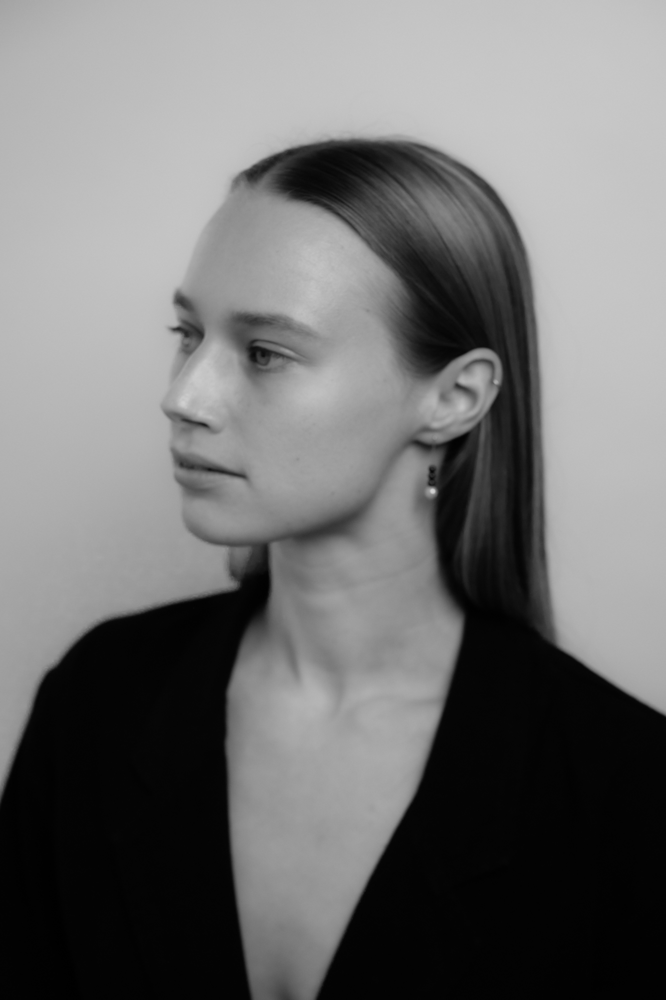
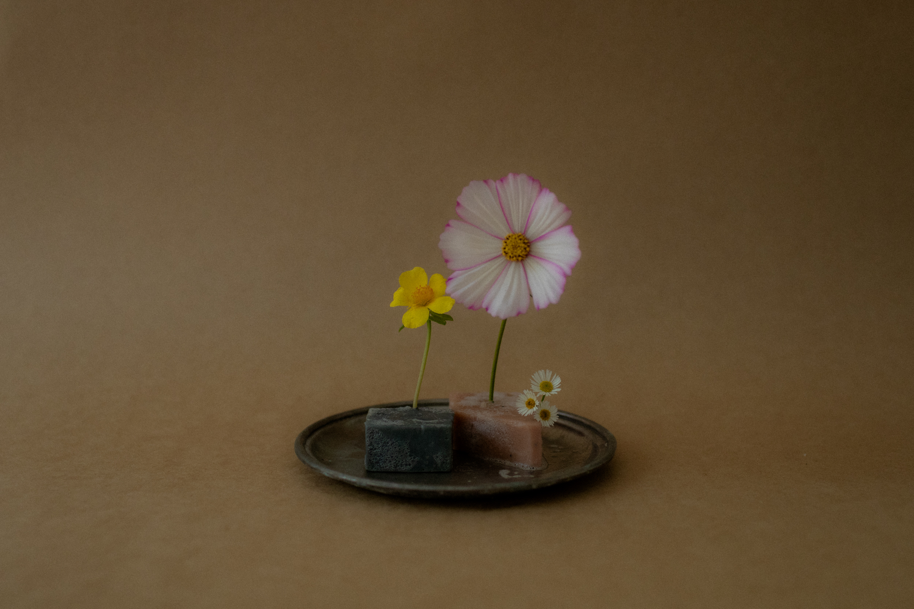
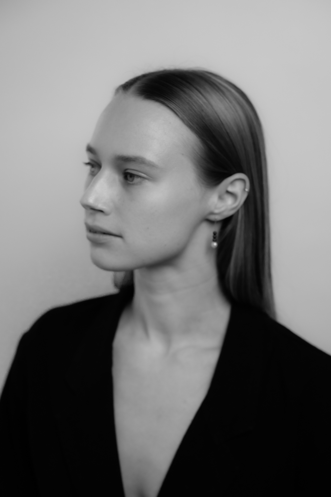
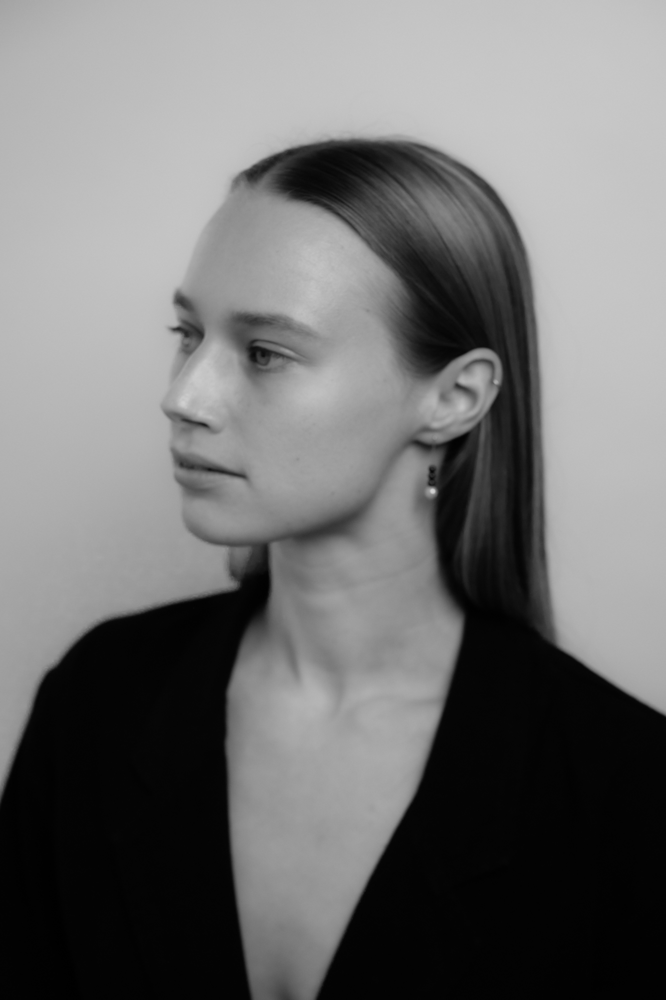

zali rae is a multidisciplinary artist, with a focus on photography & film...she is passionate about the small details and capturing humans in their candid, real states.
with experience in fine arts, zali loves to draw inspiration from all mediums for her work, and enjoys the documentary style capturing of detailed moments that tell a real story,
and evoke real emotion from the viewer.

 
